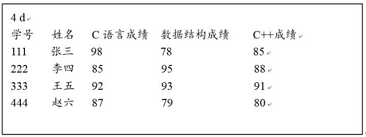
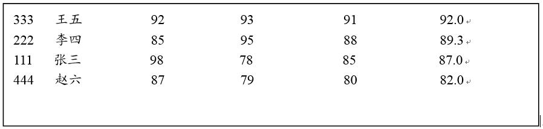
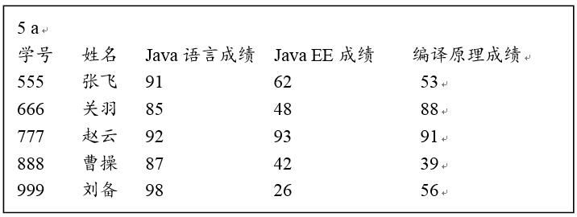
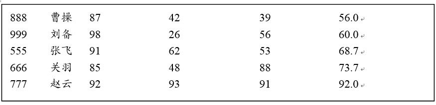

问题 E: 补考编程题5
题目描述
已知在一个文本文件中存放了学生的成绩数据，要求从该文件中读入所有学生的成绩数据；然后求出每个学生的平均成绩，并按照平均成绩对学生的成绩数据进行排序，将排序后的结果写到另一个二进制文件中。
注：本题必须提交代码，但需要人工批阅，系统批阅结果无效！
学生成绩数据文本文件中的数据格式如下：

在学生成绩数据文本文件中第1行表示学生的总人数和拟排序方式，a表示将按照平均成绩升序对学生的成绩数据进行排序，d表示将按照平均成绩降序对学生的成绩数据进行排序；第2行表示学生及课程名称信息(即表头)，课程的数量是3门；
按照平均成绩对学生的成绩数据排序后结果必须以二进制形式写入数据文件中。 注:二进制文件中表头比源成绩数据文本文件的表头多一项“平均成绩”。
上面的文本文件中成绩数据排序后，二进制文件中的数据格式如下（无法直接在记事本等软件中直接查看）：

如果成绩数据文本文件中数据如下：

成绩数据排序后，二进制文件中的数据格式如下（无法直接在记事本等软件中直接查看）：

输入
输出
样例输入 复制
f0.txt
result0.dat
样例输出 复制
444 赵六 82.0
111 张三 87.0
222 李四 89.3
333 王五 92.0
提示
1. 用结构体数组实现，程序中不得修改结构体定义，不得修改main函数中给定的主体代码；只需在红色标出的地方填充自己的代码即可。
2. 本题目排序使用快速排序算法库函数， 函数原型及使用方法见教材的314-315页：
3. 部分代码如下：
#include <stdio.h>
#include <stdlib.h>
#include <string.h>
// 结构体声明
typedef struct scores
{
char No[32]; /*学生学号*/
char name[32]; /*学生姓名*/
int score1; /*第一门课成绩*/
int score2; /*第二门课成绩*/
int score3; /*第三门课成绩*/
float aveScore; /*三门课平均成绩*/
} SCORES;
// 全局变量声明
int num; //学生人数
int sortMode; //排序方式
...... //其它函数声明
/*此函数完成功能：读完第1行学生人数及拟排序方式后，过滤掉文件中第2行的表头信息*/
void filterTitle(FILE *fp)；
int main()
{
SCORES *studentScore; /*用于存储学生分数的结构体数组*/
int i; /*循环控制变量*/
/**
* 请添加其它需要的变量定义
**/
char in_file_name[80]; /*源成绩文件名*/
char out_file_name[80]; /*排序后的成绩文件名*/
FILE *fp1,*fp2; /*源成绩文件指针，排序后的成绩文件指针 */
scanf("%s", filename1); /*从键盘上输入源文件名*/
scanf("%s", filename2); /*从键盘上输入成绩排序后的文件名*/
/**
*
* 在此处完成题目要求的所有功能；
*
**/
// 以下代码用于检查输出结果文件中的数据
fp = fopen(out_file_name, "rb");
if(fp==NULL)
return 1;
studentScore=calloc(n, sizeof(SCORES));
for(i = 0; i<n; i++)
{
fread(&studentScore[i], sizeof(SCORES), 1, fp);
}
if(fclose(fp))
{
printf("result file close is error!\n");
exit(1);
}
printf("\n\noutput the scores in sortedScore.bat file written by students\n");
for(i = 0; i<n; i++)
{
printf("%s %s %f\n", studentScore[i].No, studentScore[i].name, studentScore[i].aveScore);
}
free(studentScore);
fclose(fp);
return 0;
}